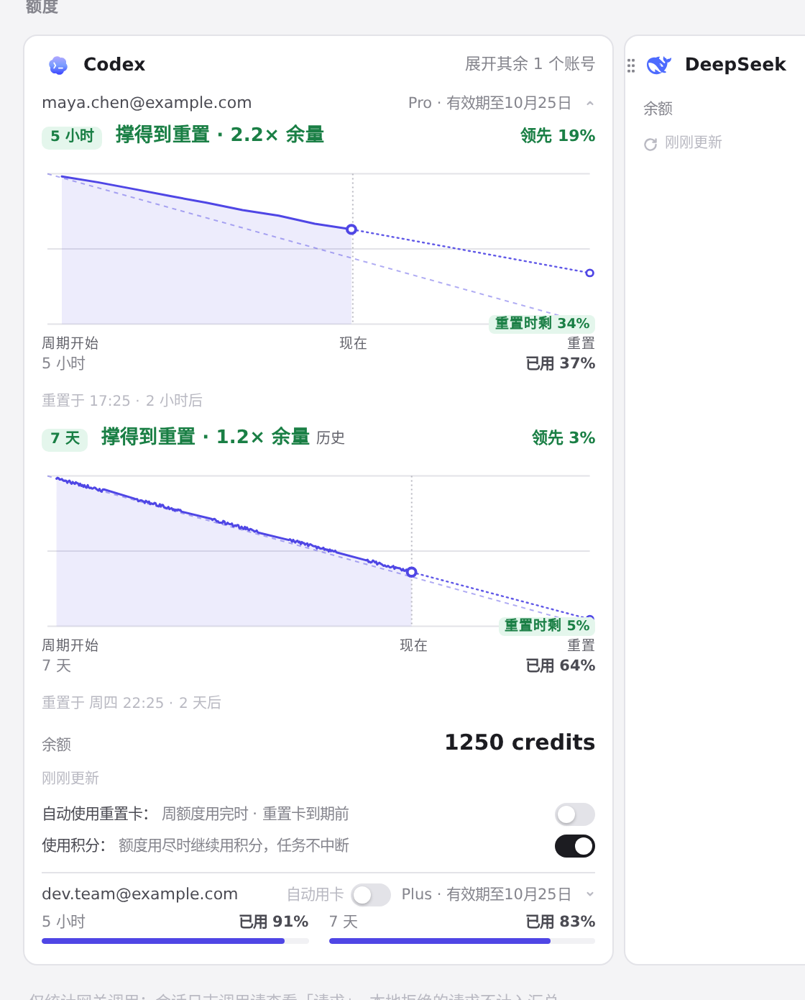
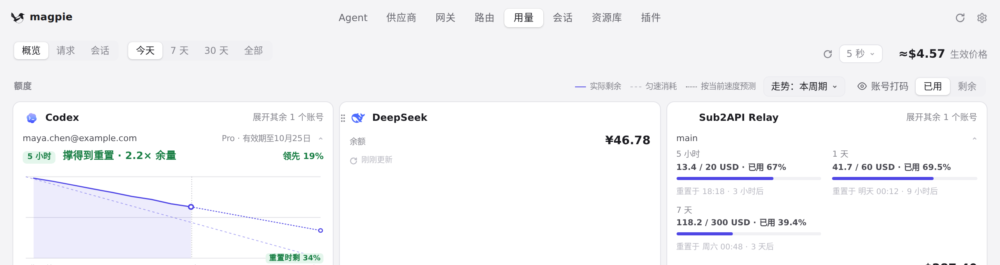
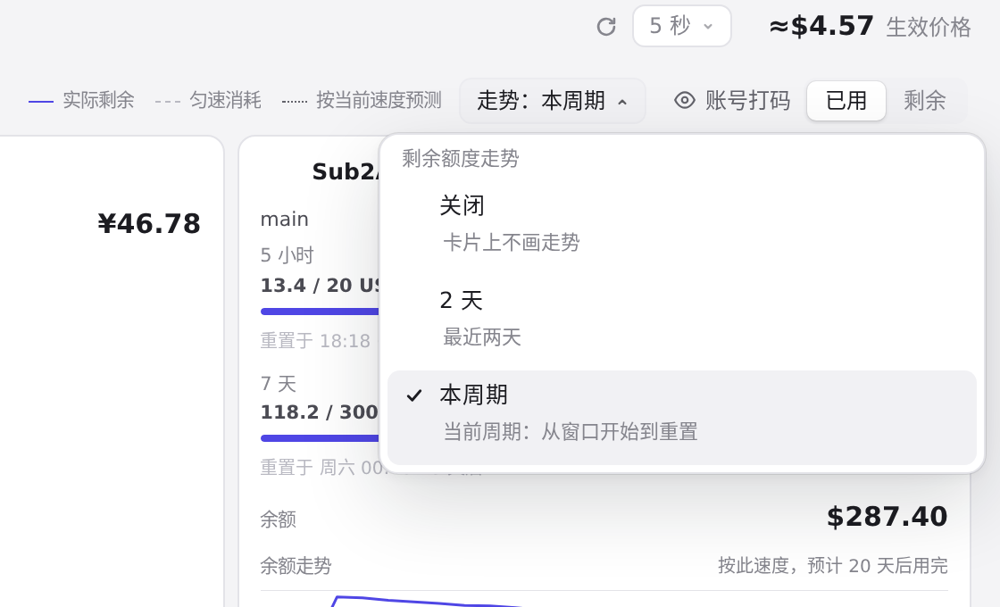
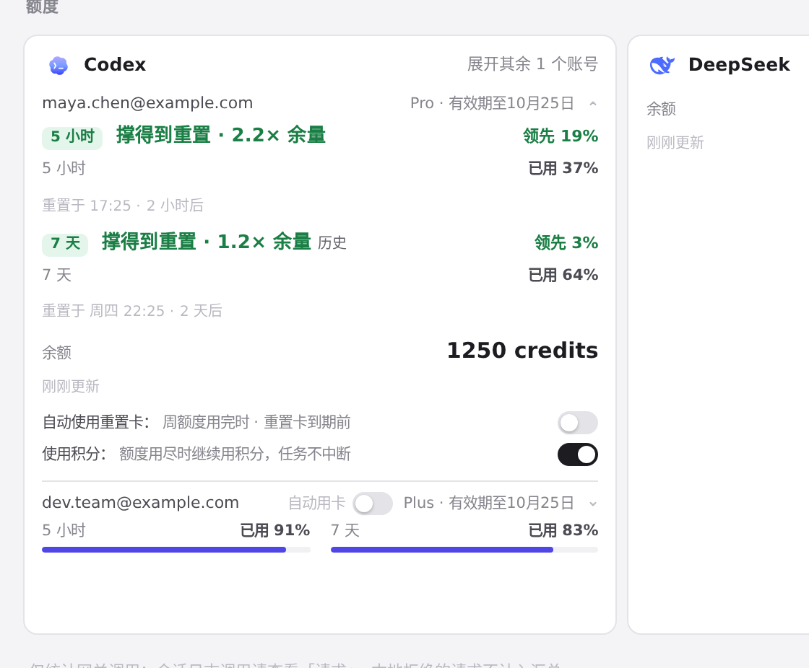
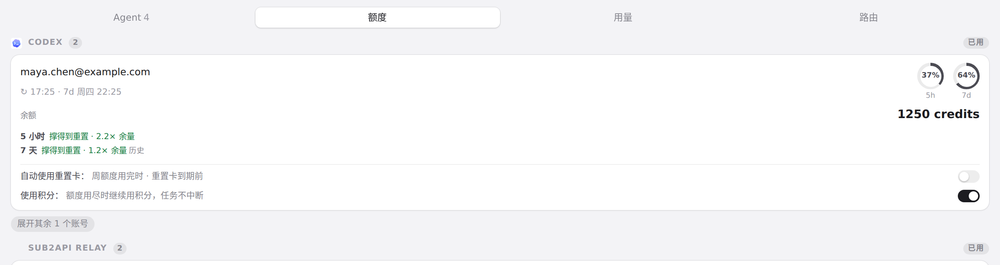

#977 界面预览
commit c82a4b8 · 回到 PR · 用量页与托盘额度卡片新增额度预测：每个完整额度窗口上方一行结论（撑得到重置/用完等）与领先落后值，下面单独画该窗口的剩余走势（实际剩余、匀速消耗、按当前速度预测），图例和走势范围选择移到额度栏；托盘卡片加了同款紧凑结论行。
红线是鼠标走过的轨迹，红色圆环是一次点击；底部文字是这一步在做什么。空格暂停，← → 逐段查看。

用量页 Codex 卡片的额度预测与走势 · 用量页 Codex 卡片：每个额度窗口的预测行与其走势图

用量页 Codex 卡片的额度预测与走势 · 额度栏右上的共享图例与走势范围选择

用量页 Codex 卡片的额度预测与走势 · 展开的走势范围菜单

用量页 Codex 卡片的额度预测与走势 · 选择「关闭」后的 Codex 卡片

托盘额度卡片里的同一结论 · 托盘额度卡片：每个窗口一行的预测